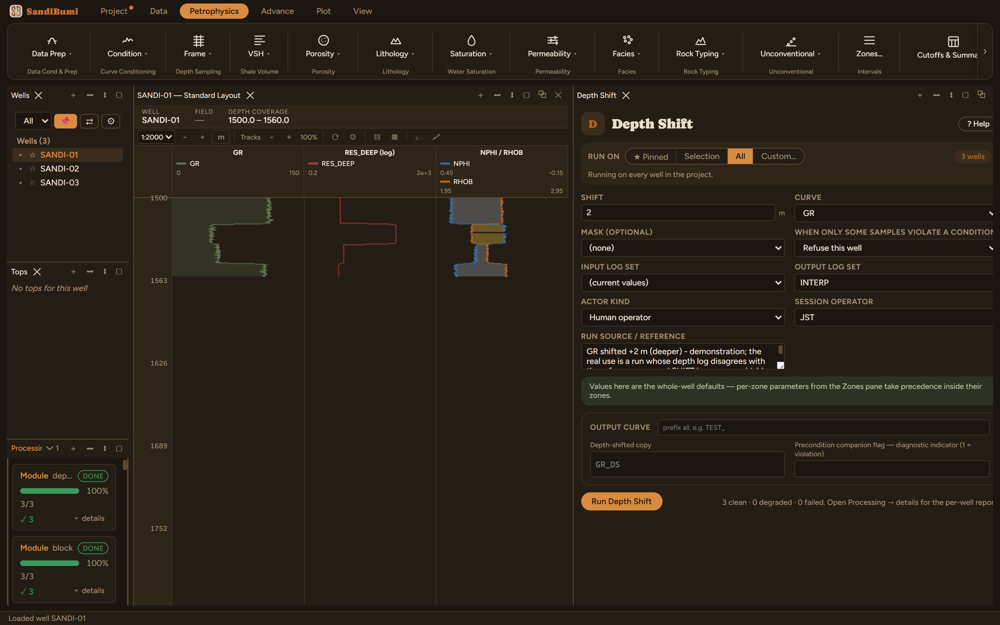

Depth Shift moves a curve by a stated amount along depth and resamples it
back onto the well's own depth grid, writing the result as a new curve; the
input is never modified. Reach for it when one logging run's depth log
disagrees with the reference run: the classic tell is a bed boundary that
sits a metre deeper on the resistivity than on the gamma ray because the
tools were run on different descents.
The physics
A rigid block shift: every feature moves by SHIFT, with positive meaning
the feature moves deeper, and the shifted values are linearly interpolated
back onto the well's grid so downstream consumers see the same depths as
every other curve. SHIFT is zone-overridable, so different intervals can take
different block shifts, which is how a cable-stretch profile that grows with
depth is applied in practice.
The picks and why
SHIFT +2 m, demonstrated on the gamma ray. Run live: the
depth of the well's gamma-ray maximum moves by +1.981 m, the
nearest grid multiple of the true 2 m at this 0.152 m sampling,
which is itself a lesson: a shifted-and-regridded feature lands on the
grid, so verify against the grid step, not the decimal you typed.
What changes with SHIFT −2 m, run live: the same feature
moves −1.981 m, shallower. The sign convention is the one
thing people get wrong with depth shifts, and it is cheap to verify this
way before shifting anything that matters.
Step by step
Measure the mismatch first: pick one sharp boundary visible on both
the reference curve and the mis-depthed one, and read the depth
difference in a log view.
Open Petrophysics ▸ Data Prep ▸ Depth Shift.
Select the curve and enter the shift, positive to move its features
deeper.
Fill the custody line and press Run Depth Shift.
One signed number. The original curve is never touched; the
shifted copy appears beside it.
Reading the result
3 clean. Overlay the shifted curve on the reference in a log view:
the boundary you measured should now sit at the same depth on both. The
Database Inspector version of the same check, comparing the depth of a
distinctive feature before and after:
SELECT (SELECT depth FROM computed_curves
WHERE curve_name = 'GR_DS' ORDER BY value DESC LIMIT 1)
- (SELECT depth FROM standard_curves ORDER BY gr DESC LIMIT 1)

The feature moved by the stated shift, deeper for positive.
QC and pitfalls
A rigid shift fixes a rigid mismatch. If the mismatch grows with depth
(cable stretch), one number is wrong somewhere; use per-zone SHIFT
overrides to apply a stepped profile.
For core-to-log depth work there is a dedicated tool (Data ▸ Core ▸
Register Depth) that correlates rather than asks you for the number; this
module is for curve-to-curve run mismatches.
Shift before interpretation, not after: every module that combines
curves assumes they agree on depth, and a saturation computed from a
mis-depthed resistivity is wrong in a way no later shift repairs.